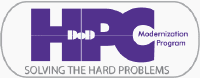

|
 |
SRB documentation index
|
|
This is the srb documentation for the latest version of the Storage Resource Broker (srb).
Contents
Documentation Notes
The contents section of this document includes links to the main index pages of the srb documentation.
The files and directories within the srb-doc directory are the same as in the original directory.
Files and directories were copied from: [latest SRB release root]/doc to: [web root]/[unpublished path]/srb-doc
Most of the files support an html view of all the documentation. There are pdf files for the documetation as well and a few text files. The pdf files each have a tree of information.
Document History
- Tuesday, January 31, 2012 @ 1:47:37 PM (Alaska Time) - LAM - This web instance no longer supports directory browsing. Added links to the pdf versions of the documentation.
-
Monday, August 30, 2010 @ 2:19:31 PM (Alaska Time) - Put the public copy back up after verbal approval from a vendor source in a conference call.
-
Thursday, August 26, 2010 @ 3:15:48 PM (Alaska Time) - Took down the public copy of this documentation which had only been up a few minutes based on the following from a vendor source:
Answer
I'm really not sure about putting SRB documentation on a public web server.
Can you please take it down for now?
Question
You had previously told me it was O.K. to put srb documentation in our area of the NGTS portal. I have trouble updating pages on the NGTS portal so I have put a copy of the latest srb documentation on a real (Apache) web server. Let me know if you want this taken down. I do not have a link to the ngts-cew directory on this site but it is public once someone has a link to it.
-
Thursday, August 26, 2010 @ 2:45:46 PM (Alaska Time) - Posted a public copy of this documentation.